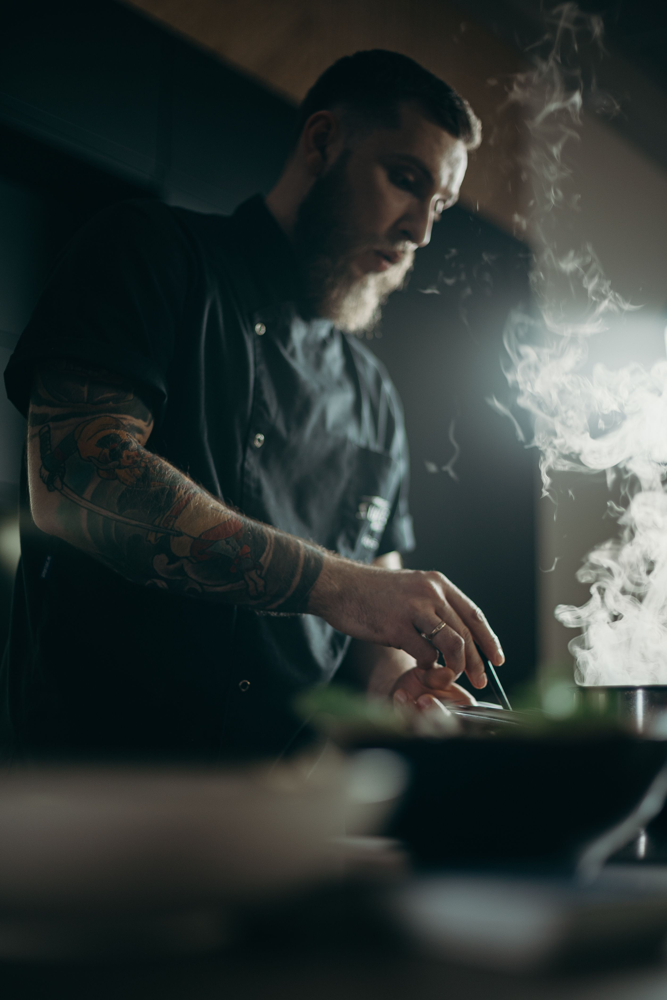
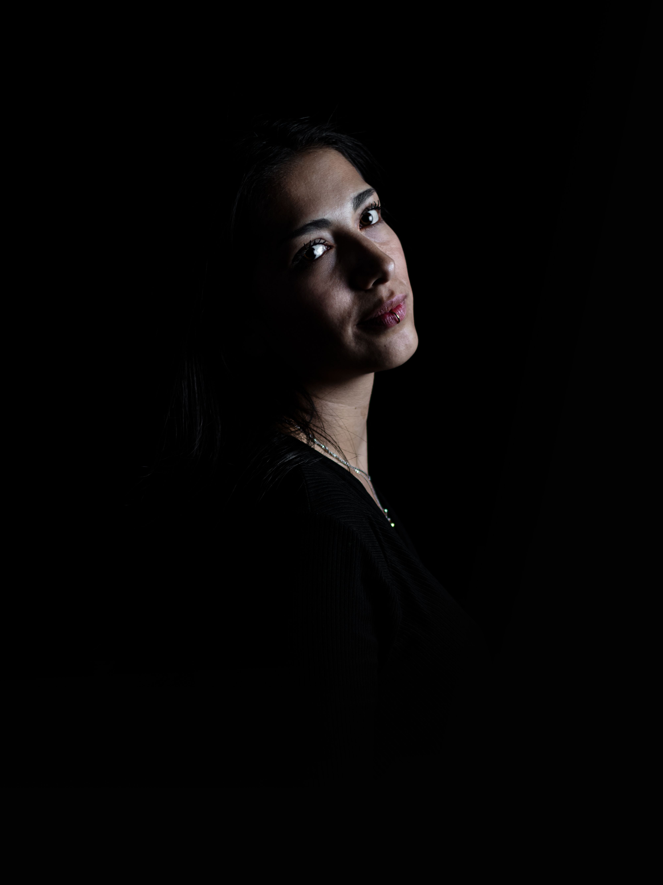

Aslam Khan
Head Chef
Three generations, one kitchen, countless family recipes.

Mirch Masala started in 1995 as a small family-run kitchen serving home-style food to neighbours in Hazratganj. What began as five tables has grown into a full restaurant, but the philosophy hasn't changed: every dish is cooked the way our grandmother used to make it — fresh spices, ground daily, and recipes that were never written down, only passed on.
Today, our kitchen is run by the same family, three generations deep, and every plate that leaves it carries that same care.

Head Chef

Restaurant Manager